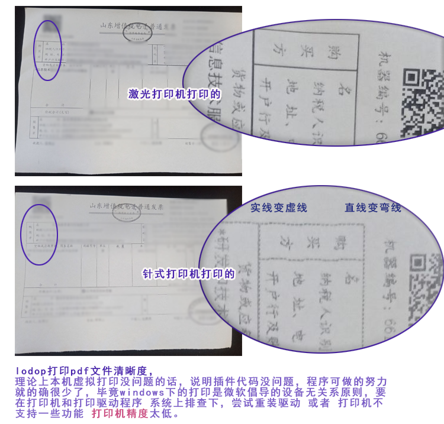

打印pdf文件不清晰
目前大部分都开电子发票了，电子普通发票的格式是pdf文件，我一直是用Lodop打印电子发票，方法是:1、在windows文件资源管理器了，选中需要打印的开始pdf，按住shift，连选到需要最后打印的结束的pdf文件，windows下方状态栏 会显示选中了多少文件，然后除以2，分成两组打印。
2、先打印第一组，打印完把纸张拿出来，再放进去，打第二组，这样A4纸张上正好是两张电子发票，中间裁开，就是两张占A4纸一半的两张电子发票了。
之前一直是在激光打印机上打印的，自带纸盒，打完第一组，再把第一组放进纸盒，打第二组，打印清晰度还不错。
后来，我尝试在自己打纸质发票的针式打印机上打印电子发票，之前有测试过针式打印机打印不清晰，但是纸质发票还可以。
实际打印效果确实电子发票不清晰，也复现了很多客户反馈的打印不清晰的现象，例如：直线变成了虚线，打印机预览显示直线实现，打印出来是虚线，直线变弯曲了，文字有像素点阵效果。
简短问答：
1.打印pdf出来实现变成虚线了、打印出来直线变弯曲了、打印出来文字不清晰像素点阵形式
用虚拟打印机测试下，真实打印机预览查看下。
2.虚拟打印机测试，真实打印机预览
用xps或pdf虚拟打印机测试下，
win7以后系统自带Microsoft XPS Document Writer虚拟打印机或者 下载安装群文件里的Doro PDF Writer虚拟打印机
用虚拟打印机测试下，真实打印机预览查看下。
虚拟打印机正常，虚拟打印机和真实打印机预览对比下。
3.和打印机有关
理论上本机虚拟打印没问题的话，说明插件代码没问题，程序可做的努力就的确很少了，毕竟windows下的打印是微软倡导的设备无关系原则，要在打印机和打印驱动程序 系统上排查下，尝试重装驱动 或者 打印机不支持一些功能 打印机精度太低。
理论上本机虚拟打印没问题的话，说明插件代码没问题，程序可做的努力就的确很少了，毕竟windows下的打印是微软倡导的设备无关系原则，换其他打印机测试下。
是否有其他打印机，比如激光打印机，用其他打印机测试下。
--简短问答结束----
图示 ：
